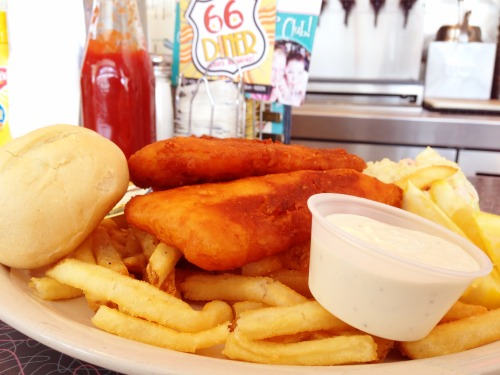
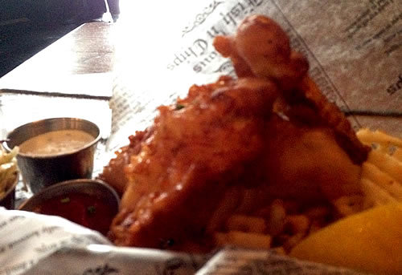

Home Blogs The Fish and the Chips

Beer-battered cod filets, straight fries. A little overcooked, but batter was crunchy and the fish was OK, a little chewy (from overcooking). Fries were crispy but not crunchy. “Tartar” sauce was just buttermilk ranch dressing, odd but tasted fine. Basically your classic diner fish & chips (except for the sauce).
. . . . . . . . . . . . . . . .

I wish this photo were better (it was very dark in the restaurant), because these were some wicked good fish & chips. Beer battered cod, sea salt waffle fries, apple slaw. The batter was crunchy and flavorsome. I’m not a big fan of waffle fries for some reason, but these were fine. The tartar sauce was also fine if not particularly memorable. Really good food. Almost enough to lift the black veil of Weltschmerz that smothers my every spark of joy in life.